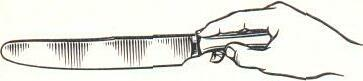
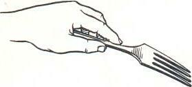
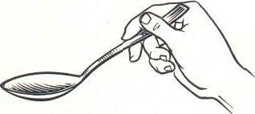
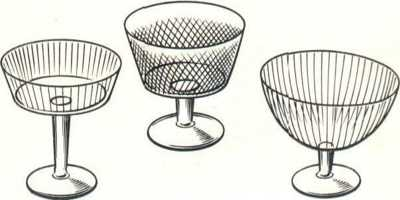
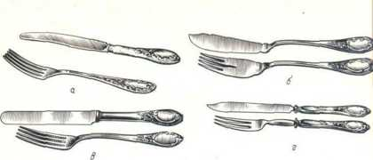
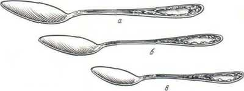
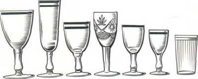

О сервировке стола

Сев за стол, осмотритесь, обратите внимание на то, как сервирован стол. Посуды и приборов вроде бы много, но каждый на своем месте, у каждого своя роль. Прямо перед вами закусочная (или мелкая столовая, а на ней закусочная) тарелка. Слева от нее - пирожковая тарелка или бумажная салфетка. Справа от тарелки - ножи и ложки, а слева - вилки.
Перед тарелкой расположены десертные приборы или один прибор - обычно десертная или чайная ложка.
За десертными приборами стоят фужер и рюмки. На закусочной тарелке лежит салфетка.
Затем ваше внимание привлекут закуски, которые выставлены на стол. Быстро и не очень сосредоточенно рассматривая закуски, вы одновременно прикидываете для себя, какие вы обязательно попробуете, а от каких воздержитесь.
Большое количество различных приборов около вашей тарелки и обилие закусок на столе не должно вас смущать. Напротив, как не порадоваться обильному и вкусному угощению, которым потчует вас радушная хозяйка!
Только невольно возникает вопрос, как правильно пользоваться всеми этими приборами и салфеткой.
Правильно и умело пользоваться предметами сервировки - это в первую очередь использовать их только по назначению.
Прежде всего нужно запомнить, что все приборы - ножи и ложки, расположенные справа от тарелки, берут и держат во время еды правой рукой, а все те, что расположены слева, - левой рукой.
Десертные приборы, расположенные ручками вправо, берут правой рукой, а ручками влево - левой рукой.
Нож рекомендуется держать так, чтобы конец его ручки упирался в ладонь правой руки, средний и большой пальцы нужно держать за бока начала ручки, а указательный палец - на верхней поверхности начала ручки ножа. Этим пальцем ручку ножа прижимают вниз при отрезании нужного куска. Остальные пальцы должны быть несколько согнуты к ладони (рис. 1).

Рис.1 Так держат столовый нож
Вилку при пользовании ею рекомендуется держать в левой руке зубцами вниз так, чтобы конец ее ручки слегка упирался в ладонь. Большим и средним пальцами нужно держать вилку за ребро ручки, а указательный палец держать сверху, прижимая ручку вилки вниз. Остальные пальцы нужно слегка согнуть и прижать к ладони (рис. 2).

Рис. 2 Так держат вилку
Мелкие куски пищи, а также некоторые гарниры к мясу или рыбе (картофельное пюре и каши, например) невозможно есть вилкой. В этих случаях ею пользуются как ложкой: переворачивают ее зубцами вверх так, чтобы плоская часть начала ручки вилки лежала на среднем пальце, слегка упираясь концом ручки в основание указательного пальца, указательным пальцем нужно придерживать вилку со своей стороны, а большим - сверху. Остальные пальцы рекомендуется слегка прижать к ладони. Пищу в этих случаях подхватывают на вилку, помогая кончиком лезвия ножа.
Ложку следует держать в правой руке так, чтобы конец ручки ложки лежал на основании указательного пальца, а начало ручки ложки - на среднем пальце. Большим пальцем при этом нужно слегка прижать ручку сверху к среднему пальцу, а указательным - поддерживать ее сбоку (рис. 3).

Рис. 3 Так держат ложку
Вы прослывете "неудобным и опасным соседом", если будете есть, держа вилку (или нож) не наклонно, а перпендикулярно к тарелке: в таком положении она может соскользнуть и на скатерть полетят капли соуса или жира.
К некоторым блюдам, кусочки от которых легко отделяются вилкой, подают только вилку. В этих случаях ее держат в правой руке.
При правильном обращении с предметами сервировки они предельно облегчат процесс еды, при неумении пользоваться ими все предметы, предназначенные помогать и облегчать прием пищи, становятся обременительными.
Как правильно пользоваться салфеткойСадясь за стол и увидев на тарелке перед собой красиво свернутую белоснежную салфетку, некоторые испытывают какую-то робость перед ней. Иногда пытаются даже осторожно отложить ее в сторонку, не зная о том, что салфетка столь же необходима, как нож, вилка, ложка, и так же, как они, призвана помочь человеку во время еды.
Мы уже говорили, что хорошо отглаженная и умеренно подкрахмаленная белоснежная салфетка, красиво сложенная, несомненно, украшает стол, придает ему вместе с другими предметами сервировки более торжественный вид. Основное же назначение салфетки состоит в том, чтобы предохранить костюм каждого от попадания случайных брызг, капель, крошек. Ею обтирают также пальцы и губы во время и после еды.
Непосредственно перед едой салфетку нужно развернуть, сложить вдвое и положить изгибом к себе на колени.
Закладывать салфетку одним из ее углов или краем за воротник или лацкан пиджака не принято: это и неудобно, и неэстетично.
Пальцы, случайно испачканные во время еды, осторожно вытирают верхней половиной салфетки, не снимая ее с колен.
Для обтирания губ салфетку берут с колен двумя руками, укорачивают путем перевертывания ее концов в ладони и, приложив середину к губам, промокают их о верхнюю половину салфетки. Вытирать губы путем скользящих движений по ним салфеткой некрасиво.
Совершенно недопустимо использовать салфетку вместо носового платка или в качестве полотенца для сильно испачканных рук.
Не полагается, сев за стол, пристально разглядывать приборы и посуду, а затем салфеткой протирать их, если вы вдруг заметили какое-то пятнышко. Этим вы обидите хозяев, усомнившись в их чистоплотности.
По окончании еды салфетку не следует тщательно складывать, пытаясь придать ей прежний вид, а просто аккуратно положить справа от своей тарелки. Не рекомендуется также вешать ее на спинку стула или класть на его сиденье.
Если салфетка случайно упала с колен на пол, не следует огорчаться: попросите дать вам чистую, поскольку пользоваться салфеткой, поднятой с пола, конечно, нельзя.
Предметы сервировкиЧтобы уверенно вести себя за столом, надо прежде всего знать предметы сервировки стола и их назначение. Вот почему именно с рассказа о них мы и начнем.
ПосудаДля еды за столом используют разнообразную фарфоровую или фаянсовую посуду:
- закусочные тарелки диаметром 200 мм - для всех холодных и некоторых горячих закусок;
- столовые глубокие тарелки (большие диаметром 240 мм и емкостью 500 см3 и малые диаметром 200 мм и емкостью 300 см3) - для всех супов и каш, особенно для тех, что подают с молоком или жидким киселем;
- бульонные чашки емкостью 250-300 см3 - для бульонов, пюреобразных и некоторых заправочных супов, которые подают с гарниром, нарезанным небольшими кусочками. Чашки бывают с одной или двумя ручками, расположенными друг против друга;
- мелкие столовые тарелки диаметром 240 мм - для всех вторых горячих блюд. В некоторых случаях тарелку подставляют под столовую глубокую тарелку с супом, а на торжественных приемах и банкетах - под закусочную тарелку. Под малую столовую тарелку с супом в качестве подставной используют закусочную тарелку;
- пирожковые тарелки - для хлеба, булочек, ватрушек, пампушек, гренков и других хлебобулочных изделий, предназначенных каждому участнику застолья. Пирожковые тарелки, если застолье семейное, а неофициальное, можно заменить бумажными салфетками;
- десертные тарелки (мелкие и глубокие диаметром 200 мм) - для сладких (десертных) блюд. От закусочных малых и глубоких столовых тарелок они отличаются тем, что обычно разрисованы фруктами, ягодами и цветами. На десертных мелких тарелках подают сладкие пироги, фрукты и ягоды, а также различные кондитерские изделия, а на десертных глубоких - так называемые объемные сладкие блюда (например, мусс, самбук) и сладкие каши с фруктами, вареньем и др.
Десертные тарелки вполне можно заменить закусочными и малыми столовыми глубокими тарелками; креманки - металлические или стеклянные (рис. 4) - для многих сладких блюд (киселей, компотов, фруктов или ягод в сиропе, мороженого и др.). Креманки со сладкими блюдами перед подачей к столу ставят на пирожковые тарелки.

Рис. 4 Виды стеклянных креманок
Посуда, о которой мы вкратце рассказали, является основной, и знать о ней и ее назначении просто необходимо каждому культурному человеку.
Существует и другая посуда: в которой готовят, подают блюдо и из которой его едят. Это - однопорционные сковороды, кокильницы, кокотницы, о которых мы расскажем дальше.
Столовые приборыК основным столовым приборам относятся ножи, вилки и ложки.
Казалось бы, каждый их знает, каждый ими пользуется, но все ли знает и правильно ли пользуется? Проверьте себя.
Каждому ножу соответствует определенная вилка.
При помощи столовых ножа и вилки едят блюда из мяса и мясных продуктов, изделия из теста (кроме сладких), пироги, кулебяки, блины и др. Кроме этого, кончиком лезвия ножа можно помочь захватить на вилку гарнир.
Столовый нож по размеру соответствует диаметру мелкой столовой тарелки (+/-1,5-2 см), вилка же по размеру соответствует ножу или может быть немного меньше (рис. 5, а).
Рыбные нож и вилка (рис. 5, б) необходимы для употребления блюд из рыбы. При отсутствии специальных приборов для рыбы пользуются двумя вилками. Нож и вилка для рыбы несколько меньше столовых. Нож для рыбы тупой, похож не удлиненную лопатку, а вилка имеет четыре укороченных и широких рожка.
При помощи закусочных ножа и вилки (рис. 5, в) едят различные закуски - мясные, рыбные, овощные и др.
Десертные нож и вилка (рис. 5, г) понадобятся вам для сладких пирогов, некоторых пирожных и тортов, очищенных арбуза и дыни и др.

Рис.5 Ножи и вилки:
а - столовые; б - рыбные; в - закусочные; г - десертные
Ложек для еды, будь то торжественный ужин в ресторане или застолье в семейном кругу, требуется немало. Вот они:
- ложка столовая (рис. 6, а) - для супов, подаваемых в глубоких тарелках;
- ложка десертная (рис. 6, б) - для многих сладких блюд, подаваемых в креманках или в глубоких десертных тарелках, а также для супов, подаваемых в бульонных чашках;
- ложка чайная (рис. 6, в) - для горячих напитков (чая, кофе с молоком или сливками, какао), подаваемых в чайных чашках или стаканах. Чайную ложку вполне можно использовать вместо десертной;
- ложка кофейная - для черного кофе, подаваемого в кофейной чашке.

Рис.6 Ложки: а - столовая; б - десертная, в - чайная
Разумеется, все перечисленные приборы являются персональными и при сервировке стола их кладут перед каждым участником застолья.
Стекло (хрусталь)
К столу кроме еды традиционно подают различные напитки. Пьют их, как правило, из стеклянной (хрустальной) посуды - рюмок, фужеров, бокалов и стопок (рис. 7).

Рис.7 Стеклянная и хрустальная посуда (слева направо): фужер, бокал для шампанского, рюмка для красного вина, рюмка для белого вина (рейнвейная) , рюмка для крепкого вина (мадерная), рюмка для водки и водочных изделий, коническая стопка для сока
Каждому напитку соответствует своя посуда:
- водочная рюмка емкостью 35-50 см3 - для крепких спиртных напитков (водки, горьких настоек, наливок), которые обычно подают к различным холодным и горячим закускам;
- мадерная рюмка емкостью 50 см3 - для крепленых вин (мадеры, портвейна и др.), подаваемых к первым блюдам;
- рейнвейная рюмка двух типов: обыкновенная емкостью 75 см3 и из цветного стекла на высокой ножке емкостью 150 см3.- для натуральных белых вин типа рислинг, подаваемых к рыбным горячим блюдам и некоторым холодным закускам;
- лафитная рюмка емкостью .100 см3 - для натуральных (виноградных) красных вин, подаваемых к горячим мясным блюдам;
- бокал для шампанского емкостью 125 см3, подаваемого к десертным блюдам;
- фужер емкостью 200-250 см3 - для минеральной или фруктовой воды и других безалкогольных напитков;
- коньячная рюмка емкостью 15-25 см3 - для коньяка или рома, подаваемого обычно к кофе. Если к столу подают только коньяк, то его пьют из водочной рюмки;
- стопка коническая емкостью 120-150 см3 - для различных соков и морсов;
- стопка цилиндрическая емкостью 250-500 см3 - для пива и морса.
Нетрудно заметить, что емкость бокала напрямую связана с крепостью напитка: так, чем крепче алкогольный напиток, тем меньше рюмка для его употребления. Кстати, ни один гость не обязан пить: каждый должен быть осторожным и воздержанным, знать, сколько он может выпить, не выходя за рамки приличия и не ставя себя в неудобное положение.
Если предполагается обойтись без алкогольных напитков, то при сервировке стола рюмок, кроме фужеров, на стол не ставят. Рядом с фужером в этом случае ставят коническую или цилиндрическую стопку для различных безалкогольных напитков, ассортимент которых определяется перечнем подаваемых блюд. Для утоления жажды лучше всего подходит газированная или минеральная вода. При этом все безалкогольные напитки подают к столу охлажденными до 8-12оС.
Столовое бельеК столовому белью, которым пользуются все участники застолья, относятся скатерти и салфетки. Скатерти - чистые, хорошо проглаженные и аккуратно постеленные- придают столу праздничный, торжественный вид. Концы скатерти должны свисать примерно на 25-30 см, а с торцов прямоугольного стола - чуть больше. Одинаково хороши полотняные белые и цветные скатерти. Правда, есть здесь свои традиции: для торжественных случаев рекомендуются белоснежные слегка подкрахмаленные скатерти, а для чайного стола - цветные.
CалфеткиНепременная деталь при сервировке стола, особенно в ресторане, - салфетки. В зависимости от назначения их подразделяют на столовые и чайные. Столовые салфетки размером 46х46 см необходимы за столом практически во всех случаях и только для сервировки стола к чаю рекомендуются так называемые чайные салфетки размером 35х35 см, преимущественно цветные.
Для торжественных застолий предпочтительнее полотняные салфетки, которые в семейном кругу вполне можно заменить бумажными. Их обычно предварительно свертывают треугольником, кладут по 8-10 шт. в салфетницы (предназначенные для этого стеклянные или пластмассовые стаканы) и ставят на стол или раскладывают на находящиеся слева тарелки под хлеб.
Бумажной салфеткой можно пользоваться только один раз, после чего ее нужно скатать в шарик и положить под борт тарелки, а после еды - на тарелку вместе с использованными приборами.
В ресторане, как мы уже говорили, гостям предлагаются только полотняные салфетки. Причем существует множество способов их складывания, что зависит от характера обслуживания. Так, ее можно свернуть вчетверо или сложить в форме конусного колпачка либо конверта. И это не все. Известны и другие приемы складывания салфеток - "парус", "космос", "веер", "тюльпан" и др. Однако во всех случаях соблюдение одного условия является непреложным: салфетка должна быть свернута так, чтобы ее можно было легко развернуть. При этом принимаются во внимание и правила гигиены: чем меньше прикоснутся пальцы официанта к салфетке, тем лучше.
Источник : http://www.koryazhma.ru/articles/etiket/table_tools.asp